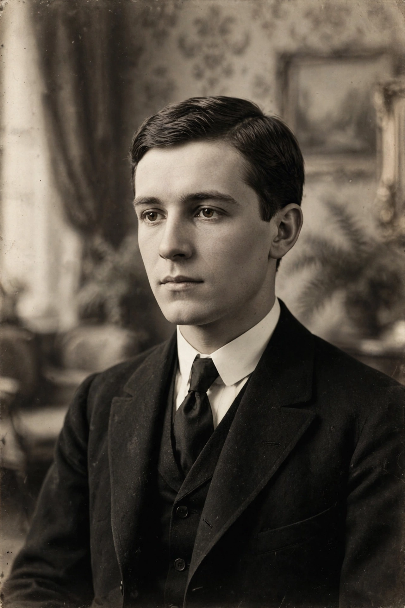

Alban Berg
Alban Maria Johannes Berg (9 February 1885 – 24 December 1935) was an Austrian composer of the Second Viennese School. His compositional style combined Mahlerian Romanticism with a personal adaptation of Arnold Schoenberg's twelve-tone technique. Among modernist composers, his operas Wozzeck (1925) and Lulu (posthumously premiered in full in 1979) are among the most frequently performed and recorded of the twentieth century.

| Alban Berg | |
|---|---|
| Born | 9 February 1885, Vienna, Austria-Hungary |
| Died | 24 December 1935 (aged 50), Vienna, Austria |
| Occupation | Composer |
| Movement | Second Viennese School |
| Notable works | Wozzeck, Lulu, Violin Concerto |
Life and works
Berg was born in Vienna and showed literary as much as musical interests as a youth. In 1904 he became a pupil of Schoenberg, who taught him counterpoint, harmony and composition and remained a central influence; his fellow pupil was Anton Webern. Berg served in the Austrian army during the First World War, an experience that fed directly into Wozzeck, adapted from Georg Büchner's fragmentary play Woyzeck.
Other major works include the Lyric Suite for string quartet (1926), the chamber aria Der Wein (1929), and the Violin Concerto (1935), written for Manon Gropius and bearing the inscription "To the Memory of an Angel". Berg died of sepsis in 1935, leaving the third act of Lulu in short score; it was completed by Friedrich Cerha and premiered in full in Paris in 1979.
Style
Unlike the more austere serialism of his colleagues, Berg's music retains strong bonds to tonality, quotation (including Bach chorales and folk song) and Romantic expressive gesture — features that have made his work the most accessible of the Second Viennese School.
Categories: 1885 births · 1935 deaths · Austrian opera composers · Twelve-tone and serial composers